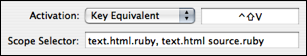
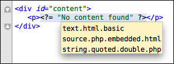

A scope selector is a pattern much like a CSS selector which is matched against the scope of the caret (i.e. current context) and the outcome is either a match or a non-match (see also: ranking matches further down).

This allows the activation method of a bundle item to be limited to contexts like “inside a comment” or “in an HTML document”. The advantage of this is that it allows a tab trigger like for to be re-used in different languages and works smoothly for mixed documents like HTML which can have embedded CSS, PHP, Ruby and JavaScript.
Scope selectors are also used with preference items and themes. In the latter case they are used to style elements of a document and in the former case to adjust various aspects of editing etc. on a granular basis.
Generally a document consists of many different elements. A prose document may contain headings, paragraphs, bullet lists, emphasized text where source code will often contain strings, comments, keywords, storage types etc.
In TextMate the language grammars will match these elements and assign a name to each. This name should be dot separated with each additional part specializing the kind of element matched. For example a double-quoted string in C will get string.quoted.double.c assigned as its scope name (see naming conventions for more info).
A scope selector in its simplest form is an element name to match, but it only needs to specify a prefix of the actual element name. So if we specify string as our scope selector it will also match all quoted strings. Likewise if we specify string.quoted it will match single, double and triple quoted strings.
An empty scope selector will match all scopes but with the lowest possible rank (see ranking matches later).
As with CSS, it is possible to use the context of an element in the scope selector. The picture below shows the scope for the string as a tool tip (via ⌃⇧P). The direct parent of the string is source.php.embedded.html and text.html.basic is an ancestor.

In the scope selector we specify element names as a space separated list to indicate that each element should be present in the scope (and in the same order). So if we want to target all strings in PHP, we can use source.php string, or we can use text.html source.php to target PHP embedded in HTML.
There are situations where we want to match a subset of a document but exclude particular subsets of this subset.
For example in Ruby it is possible to embed code in strings using #{…}, so a nice snippet would be to insert that when pressing # inside of a string. The scope selector for that would be: source.ruby string.
This unfortunately means that even inside code (embedded in strings) # will insert #{…}. To avoid this, we can subtract scope selectors to get the (asymmetric) difference using the minus operator. So a better scope selector for our snippet would be source.ruby string - string source.
Below is an illustration of what that scope selector would target.
puts "Today is #{Date.today}."
^^^^^^^^^^ ^^
When we want something to match several distinct scopes, we can group scope selectors with the comma operator. For example to match both strings and comments the scope selector would be: string, comment.
If more than one scope selector matches the current scope then they are ranked according to how “good” a match they each are.
The winner is the scope selector which (in order of precedence):
Match the element deepest down in the scope e.g. string wins over source.php when the scope is source.php string.quoted.
Match most of the deepest element e.g. string.quoted wins over string.
Rules 1 and 2 applied again to the scope selector when removing the deepest element (in the case of a tie), e.g. text source string wins over source string.
In the case of tab triggers, key equivalents and dropped files (drag commands), a menu is presented for the best matches when these are identical in rank (which would mean the scope selector in that case was identical).
For themes and preference items, the winner is undefined when multiple items use the same scope selector, though this is on a per-property basis. So for example if one theme item sets the background to blue for string.quoted and another theme item sets the foreground to white, again for string.quoted, the result would be that the foreground was taken from the latter item and background from the former.